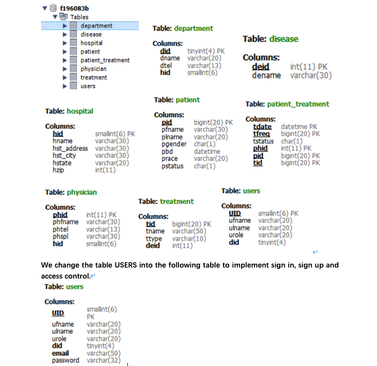

CODE
Business Case
We Do Care (WDC) is one of the largest group of hospitals in the country having several subsidiary hospitals associated with it. WDC also has a research academic and research hospital, namely WDCARH (We Do Care Academic and Research Hospital). Each subsidiary hospital affiliated with WDC has its own independent database management system. It is becoming very difficult for WDCARH to collect all patients’ data for research and treatment purposes and to analyze them collectively to draw meaningful insights.
A tremendous amount of data is a very important factor for any researching work. For example: when WDCARH hospital decides to do a medical research on Nephrosis, it needs to collect information of examination data of patients from initial function to final renal failure, from a lot of kidney disease patients of all ages, gender, race, and with any other medical conditions. If WDCARH research hospital is only able to collect data from few of hospitals with same data formats, it will not have enough or full set of data to support a credible research. The only way for WDCARH hospital to solve this issue is to collect and analyze all data of all patients in all WDC subsidiary hospitals.
Features and Functionsality
● Sign in, sign up and access control
people can register an account and then sign in our website. When people sign up, they should choose a role, which determine their access to our website. For example, DBA have the access to data-manipulation, but BA not.
● “Hello” token
user can see “hello, ‘username’” in the header of our website, which we get from SESSION.
● Create Record
users can create record int the GUI interface(“patient_treatment” table in our database) and this record can be inserted to our database automatically.
● CURD operations
are accomplished in disease, department and department table. For each table, when we add new data, the primary key is create automatically in our database. Also we add some hint with light gray color in input box for users to input with standard type data. Moreover, if the users miss to fill in some columns but still click the add button, the system will remind the users “miss data”. If the user add a not existed foreign key in department table, the system will remind the users “wrong hid”. Under each operation box, we display the all the this table columns in real-time. After each operation, the data in the table will change.
● Data analysis
In the data analysis menu, we use circle chart to display different data partition percent, this is also connect to our database and can be changed in real time. Which is very straightforward for research people.
● UI design
We create the homepage with a background picture and our slogan by using css style. Use bootstrap to design each data display table. Also use font-awesome for some icons.